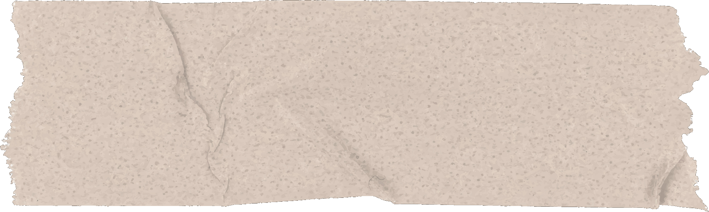
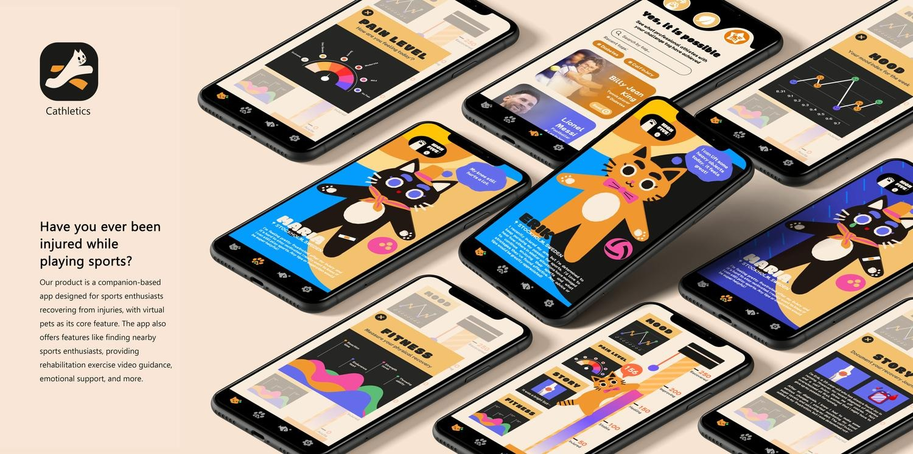
Seven interviews with people who play sport regularly, transcribed in full and then clustered into six themes: exercise frequency, exercise experiences, individual experiences, experiences in group, injury sensation, and liked or disliked features.
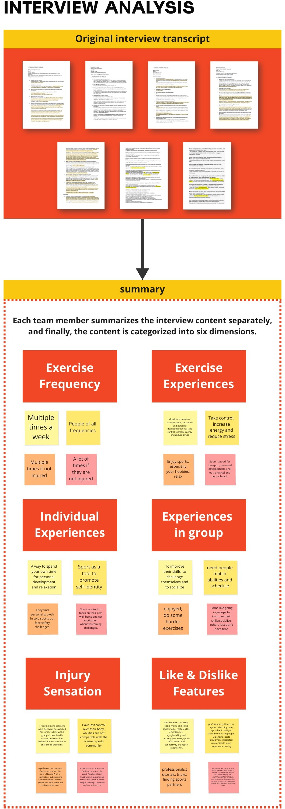
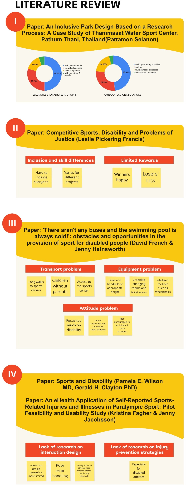
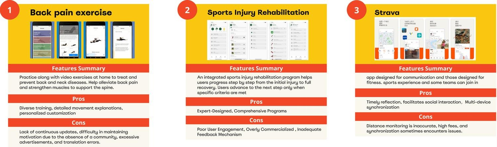
Two personas came out of the interviews. Erik, 22, plays in a group and shares everything; Maria, 35, trains alone for personal records and posts nothing. Both are injured, and both want to keep going.
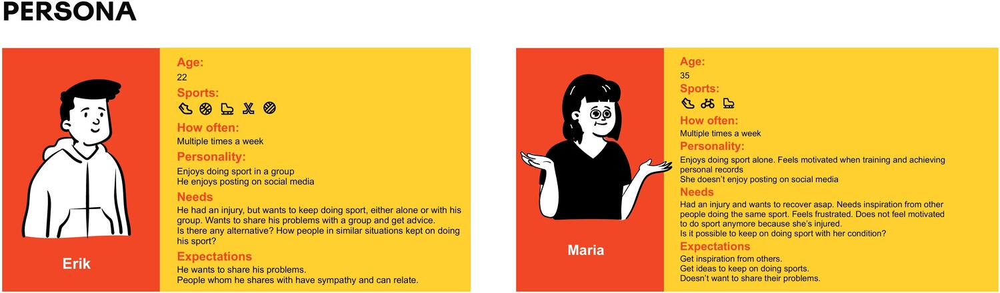
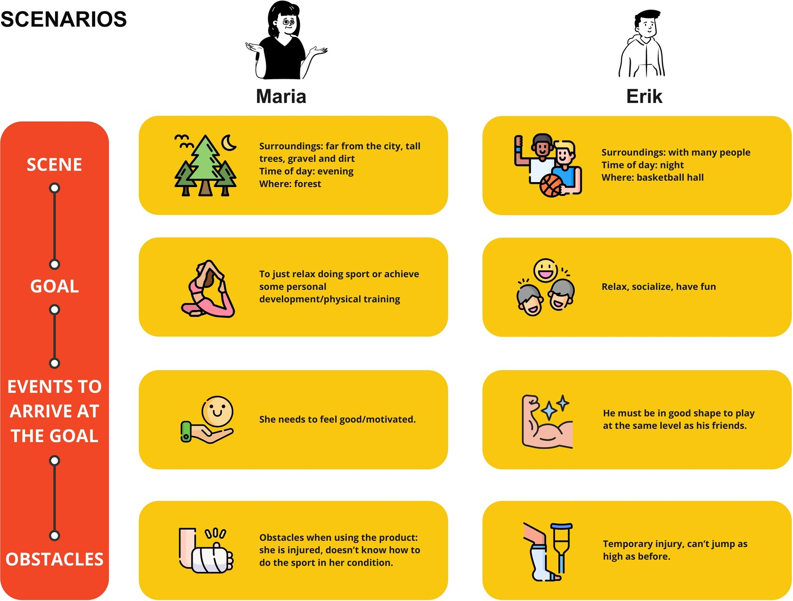
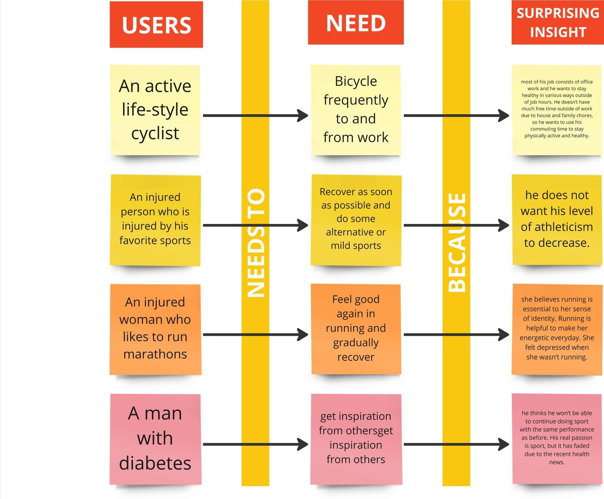
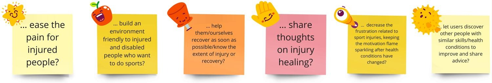
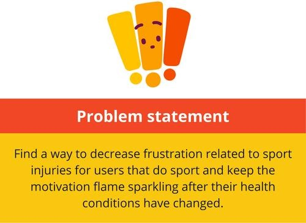
Sketching sessions worked through rankings, mood sharing, a 2D coach and a pet that turns red when its owner overexerts, before the virtual pet settled as the core of the app.
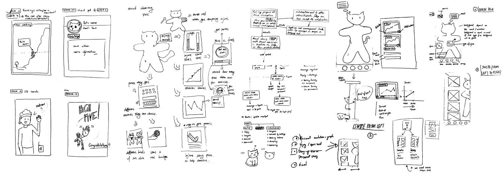